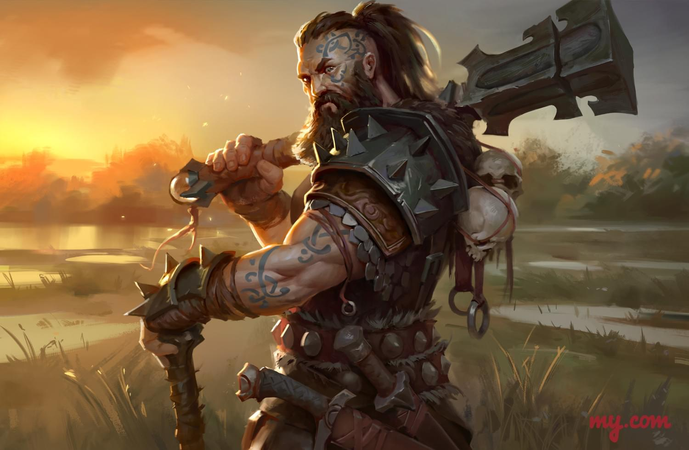

Имя: Андрей

Характеристики:
Сила +2
Ловкость +1
Телосложение +1
Интеллект 0
Мудрость -2
Харизма 0
Акробатика +1
Ателетика +3
Внимательность -2
Выживыние +1
Выступление 0
Запугивание +1
История 0
Ловкость рук +1
Магия 0
Медицина 0
Обман 0
Природа -2
Проницательность 0
Религия 0
Скрытность +1
Убеждение 0
Уход за животными 0
Анализ 0
Характер:
- Смелость - всегда готов сразиться с опасностью, не ощущая страха перед врагами или тем, что может его поджидать.
- Гневливость - быстро теряет терпение и может впасть в гнев даже из-за мелкой провокации, что иногда может затруднить межличностные отношения.
- Недоверчивость - скептически относится к чужим намерениям и не легко доверяет новым знакомым, подвергая их подозрению.
- Воля к победе - никогда не сдается и готов бороться до конца, даже когда ситуация кажется безнадежной, что делает его истинным лидером в бою.
Варвар - человек
Люди - это раса, заселяющая разнообразные уголки мира. Их история богата перемещениями и смешением культур. Они изначально начали свой путь как небольшие племена, живущие охотой и собирательством. Со временем они освоили земледелие и начали строить первые поселения.
В разные эпохи их общество прошло через много фаз - от феодальных государств и королевств до более сложных и современных форм организации. Торговля, наука и искусство процветали в их культуре, и важные открытия и изобретения помогли им обогатить свою жизнь.
Подобно другим расам, у людей тоже были периоды конфликтов и войн, но их история также знаменует моменты сотрудничества и мира. Люди часто проявляли склонность к освоению новых территорий и обмену знаний с другими расами, что содействовало разнообразию и взаимопониманию в мире.
Их культура отмечена множеством верований, традиций и обычаев. От поклонения природным богам до высоких ценностей свободы и индивидуализма, люди вели множество дискуссий и размышлений о смысле жизни и роли каждого в этом мире.
Важно отметить, что их способность адаптироваться к разнообразным ситуациям и изменениям сделала их народом, способным выживать и процветать в разных условиях. Это также дало им возможность находить общий язык с другими расами и формировать мир, в котором все могут находить место и ценить свою уникальность.
История:
Мрачные переулки города скрывали множество секретов, и именно здесь судьба перекрестилась с беглым варваром. Тесная улица вела к порту, где маячил всего один корабль. В этой мгле таились возможности и надежда на свободу.
Скрываясь в тени, варвар следил за героями, пока те справлялись с городскими стражниками. Он не жаждал крови, не искал сражения. Его единственное желание – свободно уйти с этим кораблем, находящимся у самого края причала.
После того как герои справились со стражей, варвар не теряя времени, прокрался к одному из мертвых стражников и ловко вытащил из его руки оружие. В тишине ночи он направился к кораблю, который мог стать его спасением.
С непоколебимой решимостью в сердце, он взобрался на палубу. Там он стоит, полон уверенности, что его жизнь не в руках героев или обнаружения, а только в его власти. Он готов ко всем испытаниям, готов обнажить клинок в любой момент, если потребуется. Похоже, что судьба корабля, а может быть, и всего мира, осталась внутри его крепких рук.
Вы являетесь высоким и мускулистым мужчиной, с широкими плечами и крепкой фигурой. Ваша кожа загорела от солнца и покрыта тонкими шрамами, свидетельствующими о борьбе и приключениях. Ваши живые глаза, зажженные решимостью, подчеркивают ваше определенное лицо. Волосы темные и немного взлохмаченные, словно только что ветер расчесал их. Ваш внешний вид полон уверенности и внутренней силы, а ваша одежда состоит из кожаной брони и потертой ткани, которые сливаются в образ свободолюбивого скитальца.
Инвентарь:
Веревка, Карта побережья, Мешок с мелкими инструментами (Включает нож, молоток, гвозди и другие мелкие инструменты, полезные для ремонта), Фляга с водой, Камень с руной искры, Фонарь на масле
Способности:
Берсерк
Ваши атаки становятся беспорядочными и сильными. В течение 1 хода вы можете сделать две атаки, но с штрафом -2 к броску атаки.
Стойкость
Ваша выносливость позволяет вам противостоять даже самым тяжелым атакам. Восстановление 1d4 + 2 единиц здоровья.
Прорывающий удар
Вы наносите сильный удар, прорывающий броню противника. Урон +3, игнорирование брони
Боевой клич
Вы способны передать очередь хода своему союзнику (неограниченное действие)
Поддержка
Вы способны снять негативные эффекты с союзника
Сильный бросок
Вы способны бросать довольно тяжелые объекты, требуется проверка на силу +атлетика
Круговой удар
Вы способны нанести урон всем рядомстоящим персонажам
Инициатива
+2
Кость хитов
1к12
Экипировка:
Оружие (большинство физических оружий):
Двуручный топор
Большой топор
(1к12) + 3
Меткость: +1
Доспехи (все, кроме магических):
Кожанные ботинки
+1 к защите
Латные доспехи
Проверки ловкости и скрытности делаются с помехой, пока вы носите этот доспех
+4 к защите
Кожанные браслеты
+1 к защите
Жизни:
16
Класс брони:
16